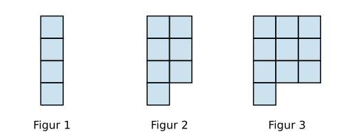

Programmering av tallfølger#
Læringsmål
Kunne lage programmer som lager tallene i en tallfølge.
Kunne lage programmer som finner summen av tall i en tallfølge.
Tallfølger er nært knyttet til de naturlige tallene og egenskaper ved tall. Du har kanskje møtt på figurtall før som trekanttall eller kvadrattall. Dette er eksempler på tallfølger som er representert med figurer. Her skal vi se på hvordan vi kan bruke programmering til å svare på spørsmål knyttet til tallfølger og figurtall.
Formler#
Når vi skriver et program, så ønsker vi ofte å regne med formler.
Eksempel 1#


Over ser vi figurtallene til de tre første i formelen \(F_n = 3\cdot n + 1\). Vi skriver ut de fire første figurtrallene:
1for n in range(1,5):
2 print(3 * n + 1)
Dette programmet skriver ut:
4
7
11
14
Vi kan også skrive ut tekst for hvert figurtall:
1for n in range(1,5):
2 print("Figur nummer", n , ":", 3 * n + 1)
Dette programmet skriver ut:
Figur nummer 1 : 4
Figur nummer 2 : 7
Figur nummer 3 : 10
Figur nummer 4 : 13
Utforsk 1#
Nedenfor vises et program som bruker en formel for å regne ut og skrive ut noen tall i en tallfølge.
Les programmet og forutsi hvilke tall programmet skriver ut.
Underveisoppgave 1#
Fyll ut programmet nedenfor slik at det skriver ut verdiene til tallfølgen gitt ved
1for n in range(1, 6):
2 a = 2 * n**2 + 1
3
4 print(a)
Fyll ut programmet nedenfor slik at det skriver ut verdiene til tallfølgen gitt ved
1for n in range(1, 10, 2):
2 b = n**2 + 2 * n + 1
3
4 print(b)
Fyll ut programmet nedenfor slik at det skriver ut verdiene til tallfølgen gitt ved
1for n in range(-2, 3):
2 c = 2 ** n
3
4 print(c)
Summere tall i en tallfølge#
I mange tilfeller er vi interessert i å summere tallene i en tallfølge.
Utforsk 2#
Nedenfor vises et program som summerer noen tall.
Les programmet nedenfor og forutsi hva som skrives ut.
Skriv inn svaret ditt nedenfor og sjekk.
Eksempel 2#

Over ser vi figurtallene til de tre første kvadrattallene \(k_n = n^2\).
Vi ønsker å summere de tre første kvadrattallene. Vi lager derfor en variabel sum = 0 og adderer figurtallet for hvert steg i for-løkken.
1sum = 0
2for n in range(1,4):
3 sum = sum + n**2
4 print(sum)
Dette programmet skriver ut:
1
5
14
Det programmet skriver ut er:
\(k_1 = 1\)
\(k_1 + k2 = 5\)
\(k_1 + k_2 + k_3 = 14\)
Eksempel 3#
Vi ser igjen på kvadrattallene med formelen \(k_n = n^2\). Hvis vi har 100 ruter tlgjengelig til å tegne kvadrattall, hvor mange kvadrattall kan vi tegne?
Vi ønsker dermed å stoppe løkken som summerer figurtallene når summen er større enn 100.
Dette kan vi gjøre med en while-løkke som kjører while sum < 100. Vi lager variabelen n for å holde styr på hvor mange figurtall vi har summert.
I tillegg bruker vi en if-setning etter while-løkken siden vi hvis vi må summere fordi 100 for at while-løkken skal stoppe. Vi må derfor trekke fra forrige sum og forrige n:
sum = sum - n**2
n = n - 1.
1sum = 0
2n = 0 # Antall figurer vi har laget
3
4while sum < 100:
5 n = n + 1
6 sum = sum + n**2
7
8if sum > 100:
9 sum = sum - n**2
10 n = n - 1
11
12print("Man kan lage", n, "kvadrattall med 100 ruter, og da har man brukt", sum, "ruter.")
Dette programmet skriver ut:
Man kan lage 6 kvadrattall med 100 ruter, og da har man brukt 91 ruter.
Underveisoppgave 2#
.svg)
Over ser vi figurtallene til de tre første Rektangeltallene \(R_n = n\cdot(n+1)\).
Endre programmet nedenfor slik at det skriver hvor mange ruter det er i de fem første rektangeltallene.
1for n in range(1,6):
2 R = n*(n+1)
3 print(R)
Endre på programmet slik at det skriver ut summen av det første, det andre og opp til det femte rektangeltallet:
2
8
20
40
70
1sum = 0
2for n in range(1,6):
3 R = n*(n+1)
4 sum = sum + R
5 print (sum)
Endre på programmet slik at det bare skriver ut summen av de fem første rektangeltallene.
70
1sum = 0
2for n in range(1,6):
3 R = n*(n+1)
4 sum = sum + R
5print (sum)
Endre på programmet slik at det skriver ut
Man kan lage 6 rektageltall med 100 ruter, og da har man brukt 91 ruter.
1sum = 0
2n = 0 # Antall figurer vi har laget
3
4while sum < 100:
5 n = n + 1
6 sum = sum + n*(n+1)
7
8if sum > 100:
9 sum = sum - n*(n+1)
10 n = n - 1
11
12print("Man kan lage", n, "rektangeltall med 100 ruter, og da har man brukt", sum, "ruter.")